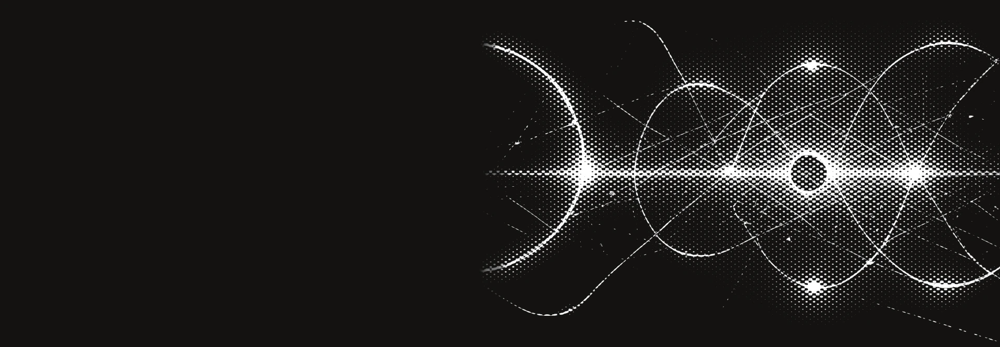
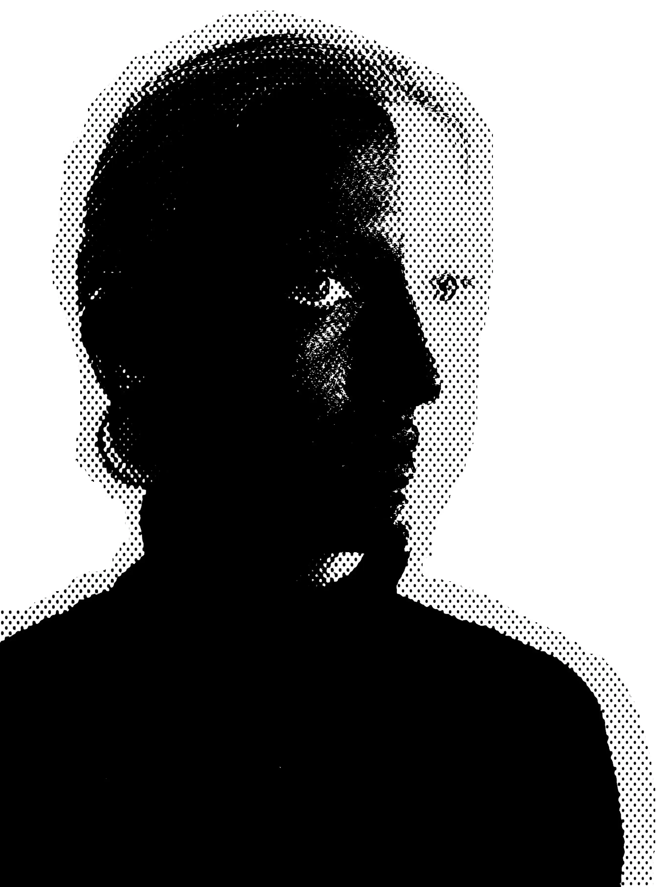
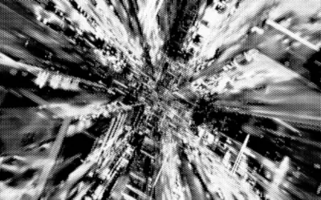
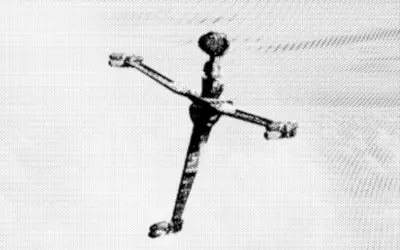
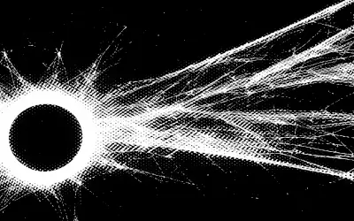
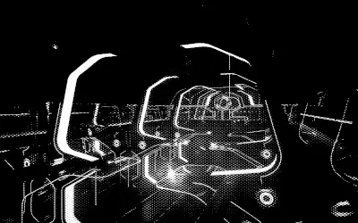
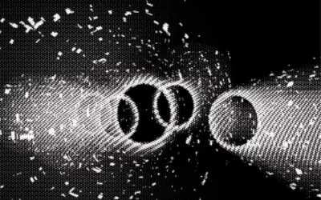
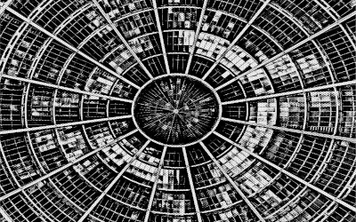
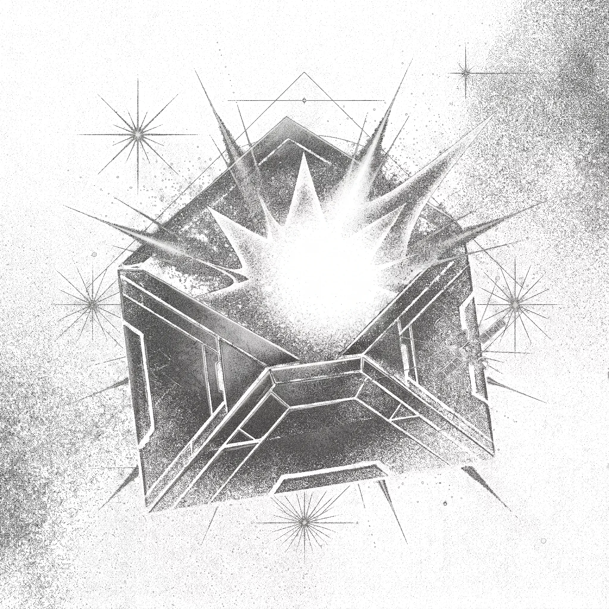

Artista digital · Paisaje sci-fi
Paisajes de lo que aún no existe

Sobre mí
Trabajo con lo
que queda de la luz
No pinto el espacio, lo erosiono. Mis paisajes están hechos de puntos que se encienden o se apagan: órbitas que podrían ser ruinas, ciudades que se deshacen en código, soles negros que tiran de todo lo que tienen alrededor. Sin color. Solo luz, grano y distancia.
Empecé imprimiendo semitonos a mano, en fotocopiadoras viejas, y acabé trasladando ese ruido a la pantalla. Hoy hago portadas, proyecciones para conciertos y escenografías digitales para quien necesite un mundo que todavía no existe.
6Obras en esta selección
2019Primer semitono
1Color (y su ausencia)
Obra seleccionada
Pulsa para ampliar

Deriva urbana


Reliquia


Corona


Interfaz


Tránsito


Cúpula
Proyección
Un caleidoscopio en blanco y negro que se pliega sobre sí mismo sin terminar nunca. Es el tipo de movimiento que uso como punto de partida para cada serie.
MP4 · H.264 · sin audio
Sonido
00:15 · EstéreoPara mirar las obras con lo que suena en mi estudio mientras trabajo. Quince segundos de ambiente para escuchar con cascos.

Encarga tu
propio horizonte
Portadas, proyecciones para conciertos, escenografías digitales. Cuéntame qué mundo no existe todavía.
Escríbeme